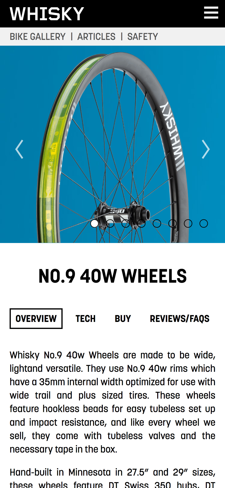
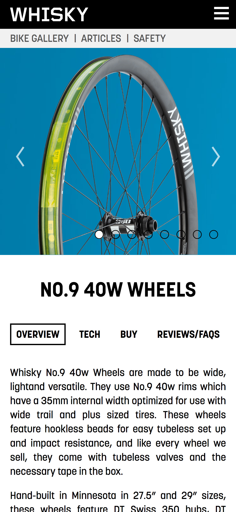
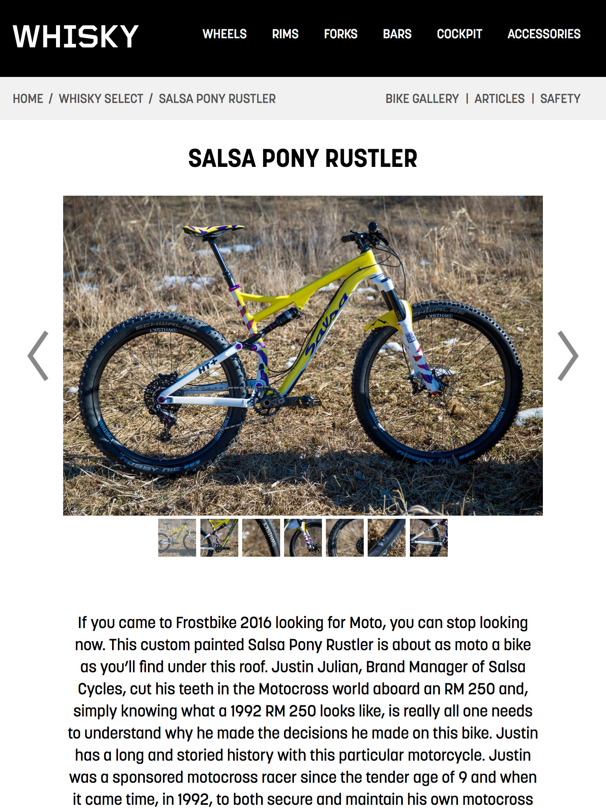
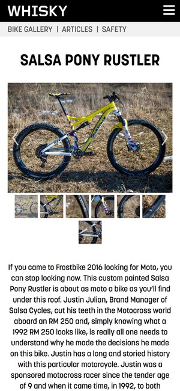
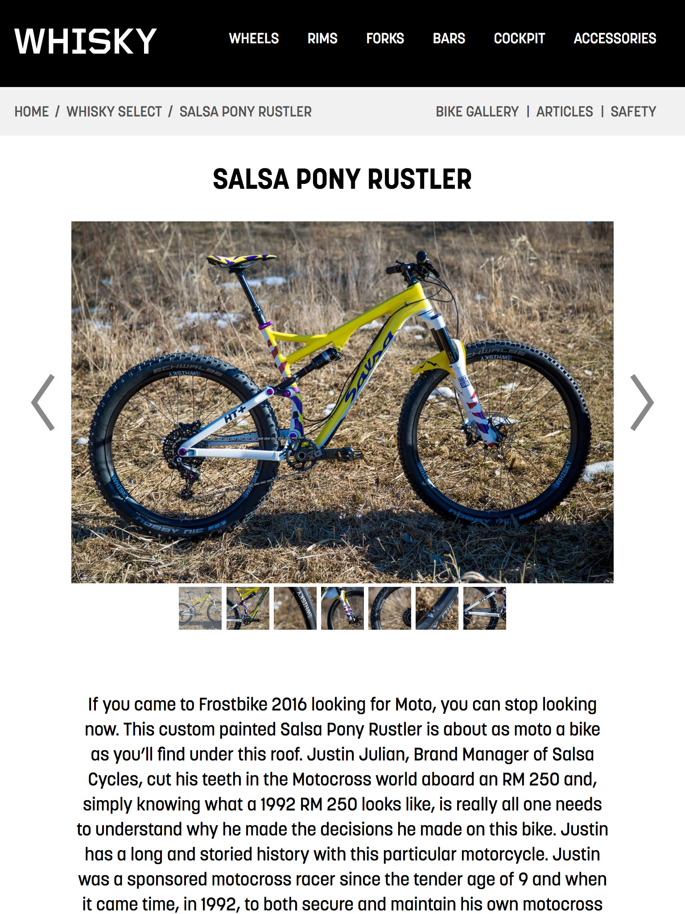
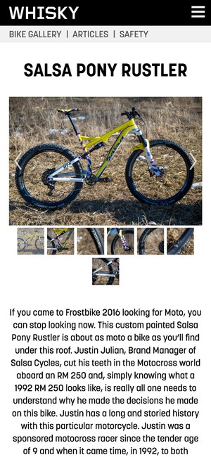

Surly Bikes
Surly is a bicycle brand operating within Quality Bicycle Products. Working closely with Surly over the years, I've developed lots of materials for them. The largest project was for their website redesign in 2018, where we built a new website from the ground up to adapt to their growing needs without compromising their zine-like aesthetic.
View Website- Digital strategy
- Wireframing
- User experience design
- Front-end development
 

 


